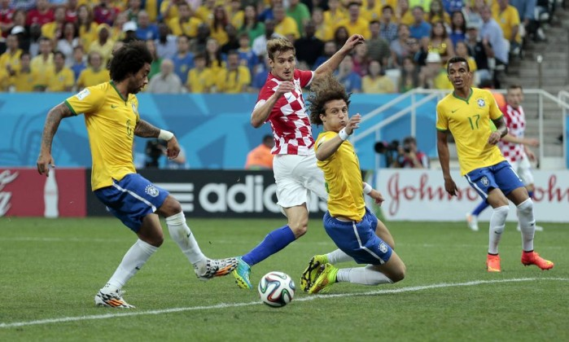
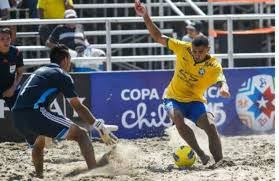
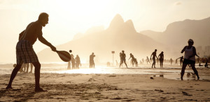
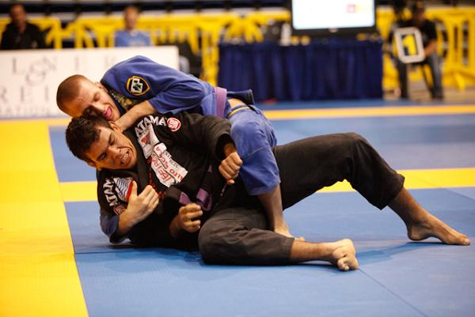
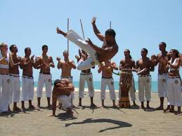

Futebol

Embora o futebol não tenha sido criado no Brasil, é o esporte mais popular no país. É praticado em centenas de países, este esporte desperta tanto interesse em função de sua forma de disputa atraente. No Brasil, Charles Miller, nascido no bairro paulistano do Brás, viajou para Inglaterra aos nove anos de idade para estudar. Lá tomou contato com o futebol e, ao retornar ao Brasil em 1894, trouxe na bagagem a primeira bola de futebol e um conjunto de regras. Podemos considerar Charles Miller como sendo o precursor do futebol no Brasil. O campeonato mais importante do futebol é a Copa do Mundo.
Futebol de Areia
O futebol de areia, também conhecido como futebol de praia, mistura as regras do futebol com as do futsal. Como o futebol tradicional, mas praticado na praia ou sobre o piso de areia e o time possui 4 jogadores de linha e 1 goleiro. A bola de futebol de areia é mais leve que uma bola normal, apesar de ter uma circunferência idêntica. No Brasil são disputados o Campeonato Brasileiro e o tradicional desafio entre paulistas e cariocas.

Frescobol

Esporte praiano, colaborativo, criado no Rio de Janeiro. Tudo indica que o frescobol seja uma derivação da prática do tênis de praia, pois na década de 1950, o arquiteto Caio Rubens Romero Lira, que costumava jogar tênis com amigos na praia de Copacabana (RJ), teria encomendado uma raquete de fabricação de madeira, de modo a não ser corroída pela maresia, como acontecia com as raquetes tradicionais, o objetivo é deixar o máximo de tempo possível a bola no ar.
Jiu Jitsu Brasileiro
Jiu-jitsu é uma arte marcial Japonesa e estilo de judô desenvolvido pela família Gracie, no início do século XX, que se tornou a forma mais difundida e praticada do jiu-jitsu (exceto o judô) no mundo, principalmente depois das primeiras edições dos torneios de artes marciais mistas (MMA), o UFC, nos idos da década de 1990.

Capoeira

É uma expressão cultural brasileira que mistura arte marcial, esporte, cultura popular e música. Desenvolvida no Brasil principalmente por descendentes de escravos africanos, é caracterizada por golpes e movimentos ágeis e complexos, utilizando primariamente chutes e rasteiras, além de cabeçadas, joelhadas, cotoveladas, acrobacias em solo ou aéreas.